|
Por Gustavo Leo
& Salvador
Nogueira
Como todo mundo sabe,
a produo de um filme envolve a filmagem de diversas cenas e ngulos
diferentes, que muitas vezes acabam no cho da sala de edio,
e no nas telas de cinema. Como "Jornada nas Estrelas II
- A Ira de Khan" no foi diferente. Entretanto, o
diretor Nicholas Meyer teve a chance de aprimorar seu trabalho em
1983, um ano aps o lanamento do longa-metragem nos cinemas
americanos.
Quando a rede de televiso ABC comprou o filme para exibio,
decidiu convidar Meyer para reeditar o filme, podendo ento
restaurar os trechos que foram cortados depois que ele j no
estava mais envolvido na produo. Entre as cenas que foram
trazidas de volta do limbo h a que explica a ligao entre
Scotty e o treine Peter Preston (Ike Eisenmann) e os eventos do
julgamento de Khan no episdio clssico "Space
Seed", alm de vrias outras pequenas cenas com
ligeiras alteraes, em geral dando mais destaque qumica
entre os personagens.
"Eu montei isso", disse Meyer revista Cinefantastique
em 1992. " irnico que como diretor de um filme, eu no
posso ter o corte final, mas como diretor de uma verso para a
televiso, ningum se importa. Momentos em que eu fui
sobrepujado, correta ou incorretamente, eu posso ter a palavra
final. muito perigoso apenas colocar as coisas de volta s por
coloc-las de volta. Eu no acredito que artistas sejam os
melhores juzes de seu prprio trabalho."
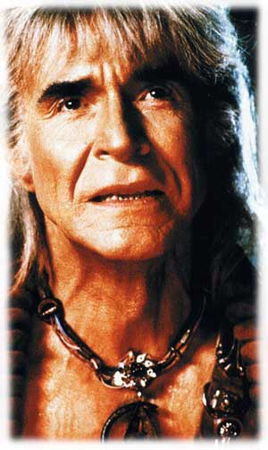
Como Nick preferiu
deixar a avaliao de sua nova edio a cargo do pblico,
trazemos agora uma transcrio das cenas que foram modificadas
na verso para TV de "A Ira de Khan", exibida em
1983 pela ABC. Ao lado de cada descrio, possvel fazer o
download da cena em questo. Com vocs, a verso ampliada de "Jornada
nas Estrelas II".
Cena 1 - Kobayashi Maru
Nicholas Meyer introduziu uma pequena alterao nesta cena, onde
a descrio da nave de carga um pouco mais detalhada e Saavik
demonstra toda a sua frustrao. Segue o trecho modificado:
SAAVIK: Dados do Kobayashi Maru.
COMPUTADOR: Nave em questo um crgueiro de combustvel neutrnico
de terceira categoria. Tripulao de 81, 300 passageiros.
Registro Amber Tau Ceti 4.
SAAVIK: Droga.
|
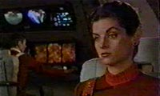
Download
Formato:
AVI (Divx)
Durao: 23 s
Tamanho: 0.9 Mb
Resoluo: 320x240
|
Cena 2 - Apartamento de Kirk
Uma pequena mudana no dilogo entre McCoy e Kirk d uma graa
adicional ao presente de Magro a seu amigo.
McCOY: Agora abra este aqui.
KIRK: Estou quase com medo. O que ? Afrodisaco Klingon?
McCOY: No, mais antiguidades para sua coleo.
KIRK: Bem, Magro, isto ... charmoso.
McCOY: Eles tm 400 anos. Voc no encontra muito com as lentes
ainda intactas.
KIRK: O que ?
McCOY: Eles so para seus olhos. Para a maioria dos pacientes da
sua idade, eu geralmente ministro Retinax 5.
KIRK: Sou alrgico a Retinax.
McCOY: Exatamente. Sade.
KIRK: Sade.
|
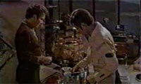
Download
Formato:
AVI (Divx)
Durao: 42 s
Tamanho: 1.9 Mb
Resoluo: 320x240
|
Cena 3 - Inspeo da engenharia
Este o primeiro contato de Kirk com Peter Preston, e aqui
que descobrimos que o impetuoso cadete sobrinho de Scotty. Uma
cena bem engraadinha, que faz meno a eventos mostrados em "The
Trouble With Tribbles".
PRESTON: Eu acredito que o sr. encontrar tudo em ordem,
almirante.
KIRK: Oh, voc acha? Voc tem alguma idia, aspirante Preston,
de quantas vezes tive de ouvir o sr. scott no intercom, falando me
dos problemas dele? Voc tem alguma idia da irritao que
tive de enfrentar no refeitrio dos oficiais pelo fato de a
Enterprise ser uma armadilha mortal voadora?
PRESTON: Oh, no, senhor. Esta a melhor sala de mquinas em
toda a Frota Estelar. Se o almirante no pode ver os fatos por si
mesmo, ento, com todo o respeito, ele to cego quanto um
morcego Tiberiano.
SCOTTY: Hu-hmmm!
PRESTON: Senhor!
KIRK: Aspirante, voc um tigre.
SCOTTY: O mais novo da minha irm, almirante. Louco para chegar
ao espao.
KIRK: O sonho de todo jovem. Eu lembro eu mesmo disso. Bem, sr.
Scott, seus motores seriam capazes de lidar com uma pequena viagem
de treinamento?
SCOTTY: D a ordem, almirante.
KIRK: Sr. Scott, a ordem est dada.
SCOTTY: Sim, senhor.
McCOY: Mas, almirante, e o resto da inspeo?
KIRK: Mais tarde.
|
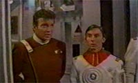
Download
Formato:
AVI (Divx)
Durao: 1 min 17 s
Tamanho: 3.5 Mb
Resoluo: 320x240
|
Cena 4 - Reliant a Regula Um
A cena em que Chekov, sob controle de Khan, comunica a dra. Marcus
que a Reliant est indo at Regula Um buscar todo o material
referente ao projeto Genesis ganhou algumas novas falas na verso
de Nicholas Meyer antes que o pobre russo coloque a culpa no
almirante Kirk. Confira.
CAROL: Comandante Chekov, isso completamente irregular. Quem
deu a ordem?
CHEKOV: A ordem vem do Comando da Frota Estelar, doutora Marcus.
Direto da equipe superior.
ASSISTENTE DE CAROL: Os civis...
CAROL: Shh... Genesis um projeto civil sob meu controle.
CHEKOV: Eu tenho minhas ordens.
DAVID: Deixe comigo, me. Quem deu as ordens?
CHEKOV: A ordem veio do... almirante James T. Kirk.
|
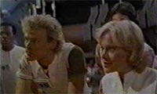
Download
Formato:
AVI (Divx)
Durao: 43 s
Tamanho: 2.0 Mb
Resoluo: 320x240
|
Cena 5 - Kirk e Saavik no turboelevador
Esta cena no ganhou nenhuma fala adicional, mas a edio
totalmente nova, utilizando tomadas de close nos atores. Nesta
verso, Kirstie Alley atua de forma muito mais sensual do que na
tomada usada no filme original.
|
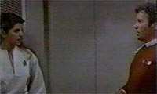
Download
Formato:
AVI (Divx)
Durao: 1 min 15 s
Tamanho: 3.4 Mb
Resoluo: 320x240
|
Cena 6 - Em Regula Um...
Carol Marcus e seus colegas discutem o que fazer para evitar que a
Reliant tome conta do projeto, e do uma pista de que vo fugir.
Na verso de cinema, s descobrimos que eles fizeram isso depois
que Kirk decide arriscar um palpite.
CAROL: A Frota Estelar manteve a paz por 100 anos. Eu no posso e
no vou subescrever a sua interpretao desse evento.
JEDDA: Voc pode estar certa, doutora, mas e sobre a Reliant? Ela
est a caminho.
CAROL: Bem... pegue seu embalo onde est mais fcil.
ASSISTENTE DE CAROL: E onde ns vamos?
CAROL: Isso para ns sabermos, e a Reliant descobrir.
|
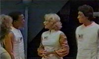
Download
Formato:
AVI (Divx)
Durao: 25 s
Tamanho: 1.2 Mb
Resoluo: 320x240
|
Cena 7 - Nos aposentos de Kirk
O trio da Enterprise est discutindo as implicaes do Projeto
Genesis, aps assistir apresentao gravada da dra. Marcus.
McCoy rouba ainda mais a cena nesta verso do filme, mostrando
seu lado humanista de forma mais contundente.
McCOY: No mais. Agora podemos fazer os dois ao mesmo tempo.
Segundo o mito, a Terra foi criada em seis dias. Agora cuidado! A
vem Genesis. Faremos o mesmo para voc em seis minutos!
SPOCK: Eu no discuto que nas mos erradas...
McCOY: Nas mos erradas? Voc poderia me dizer de quem so as mos
certas, meu lgico amigo? Voc por um acaso a favor desses
experimentos?
KIRK: Senhores, senhores, este no o...
SPOCK: Realmente, dr. McCoy, voc precisa aprender a governar
suas paixes. Elas sero sua desgraa.
|
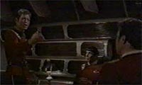
Download
Formato:
AVI (Divx)
Durao: 1 min 1 s
Tamanho: 2.3 Mb
Resoluo: 320x240
|
Cena 8 - Enfermaria da Enterprise
Khan e a Reliant acabam de explodir metade da engenharia, e com
ela Peter Preston. Na enfermaria, Scott, Kirk e McCoy testemunham
os momentos finais do cadete. Na verso original, a cena est
bem curta. Na verso reeditada por Meyer, a cena ganha mais vida,
e James Doohan tem a chance de fazer sua sequncia mais dramtica
na histria de Jornada. E no decepciona.
PRESTON: A ordem foi dada, almirante?
KIRK: Foi dada. Dobra espacial.
PRESTON: Aye...
SCOTTY: Oh, por qu?
KIRK: Ele quer me matar por sentenci-lo 15 anos atrs, e ele no
se importa com que fica entre ele e sua vingana.
McCOY: Sinto muito, Scotty.
SCOTTY: Ele ficou no seu posto, quando os treines correram...
SPOCK (no intercom): Almirante, aqui Spock.
KIRK: Sim, Spock.
SPOCK: A engenharia reporta que a energia auxiliar foi restaurada.
Podemos prosseguir em fora de impulso.
KIRK: Velocidade mxima para Regula Um. Kirk desliga. Scotty...
preciso perguntar: h alguma chance de trazer os motores
principais de volta ativa?
SCOTTY: Acho que no, senhor, mas voc ter meu melhor.
Obrigado, eu sei que voc tentou, doutor. (Scotty deixa a
enfermaria)
KIRK: Voc est bem?
McCOY: No sei. Mdicos perdem pacientes s vezes. Droga, eu
ainda estou no escuro. Como ele soube sobre Genesis?
KIRK: Eu no sei, mas o que importante agora evitarmos que
ele ponha as mos nele. Voc disse voc mesmo. uma bomba que
poderia rearranjar o Universo.
McCOY: Ainda pode haver tempo. Voc fez o melhor que podia.
KIRK: S estamos vivos porque eu sabia algo sobre essas naves que
ele no sabia.
|
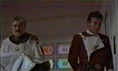
Download
Formato:
AVI (Divx)
Durao: 2 min 45 s
Tamanho: 5.9 Mb
Resoluo: 320x240
|
Cena 9 - Nas tubulaes
Kirk e o grupo de descida acabam de voltar da caverna do Genesis,
e Spock revela ao almirante a situao da nave. Enquanto eles
atravessam uma tubulao, Kirk revela ao amigo que David seu
filho, para a hilria resposta do Vulcano, dada com maestria por
Leonard Nimoy. Trecho curto, mas interessante.
SPOCK: Eles esto inoperantes abaixo do deck C.
KIRK: O que est funcionando por aqui?
SPOCK: No muito, almirante. Temos energia principal parcial.
KIRK: O que ?
SPOCK: Foi o melhor que pudemos fazer em duas horas.
KIRK: Aquele jovem meu filho.
SPOCK: Fascinante.
|
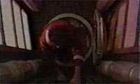
Download
Formato:
AVI (Divx)
Durao: 21 s
Tamanho: 0.8 Mb
Resoluo: 320x240
|
Cena 10 - A caminho da nebulosa Mutara
Uma piadinha entre Spock e Saavik antes da entrada na nebulosa
Mutara. Talvez seja a nica sequncia realmente dispensvel de
uma edio "definitiva", pois embora as falas sejam
boas, quebram a tenso da sensacional perseguio das duas
naves.
KIRK: Eles no querem que entremos.
SAAVIK: Almirante, o que acontece se a Reliant no conseguir nos
seguir dentro da nebulosa?
SPOCK: Acho que podemos garantir que ela nos seguir, tenente.
Lembre-me de explicar a voc o conceito de ego humano.
KIRK: A toda velocidade, Scotty.
SPOCK: Um minuto para o permetro da nebulosa.
|
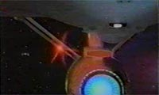
Download
Formato:
AVI (Divx)
Durao: 47 s
Tamanho: 1.9 Mb
Resoluo: 320x240
|
A est. Essas so as cenas que
esticaram "A Ira de Khan" para televiso. Foram
praticamente essas as mudanas feitas por Meyer para a Edio
do Diretor lanada em DVD duplo pela Paramount Pictures em
2002.
|